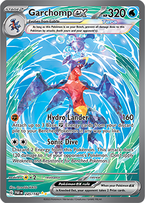

2

Garchomp EX SIR
Ranked #2 for its immense power and iconic role in the animated series.
More details →On this page you’ll discover why we’ve ranked Maushold AR, Garchomp EX and Ceruledge AR as the best Pokémon TCG cards based on lore, design, rarity and performance.
We evaluated each card across four pillars: artwork quality, rarity scarcity, gameplay impact, and thematic lore. Our data comes from the official Pokémon TCG guide and community feedback.
Ranked #2 for its immense power and iconic role in the animated series.
More details →Ranked #1 for its heartwarming family design—reminds me of home and my partner.
More details →Ranked #3 as the card that reignited my passion for TCG with its rich backstory.
More details →Discover each card’s backstory—from Garchomp’s fierce hunter origins to Ceruledge’s cursed edge saga.
Maushold’s adorable family cheers on the field, while Garchomp’s raw power and Ceruledge’s dark aura command respect.
The full-art treatments (SIR/IR) tell a story in every brushstroke— like living scenes captured on cardstock.
IR and SIR sit at the top of rarity charts—collectibility points boost their prestige and desirability.
High-value cards feel special to own. The more expensive, the greater the thrill opening—and trading—them.